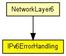
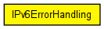

Handles error notifications that arrive from other protocol modules.
Errors arrive in messages; this implementation just prints a report and discards the message.
IPv6 implementation TODO: This is just a quick fix. We should have only ONE error handling module for both versions of IP.-WEI
The following diagram shows usage relationships between types. Unresolved types are missing from the diagram. Click here to see the full picture.
The following diagram shows inheritance relationships for this type. Unresolved types are missing from the diagram. Click here to see the full picture.
If a module type shows up more than once, that means it has been defined in more than one NED file.
| NetworkLayer6 (compound module) |
Represents an IPv6 network layer (L3). |
| Name | Value | Description |
|---|---|---|
| display | i=block/sink_s |
| Name | Direction | Size | Description |
|---|---|---|---|
| in | input |
// // Handles error notifications that arrive from other protocol modules. // // Errors arrive in messages; this implementation just prints a report // and discards the message. // // IPv6 implementation // TODO: This is just a quick fix. We should have only ONE error handling // module for both versions of IP.-WEI // simple IPv6ErrorHandling { parameters: @display("i=block/sink_s"); gates: input in; }